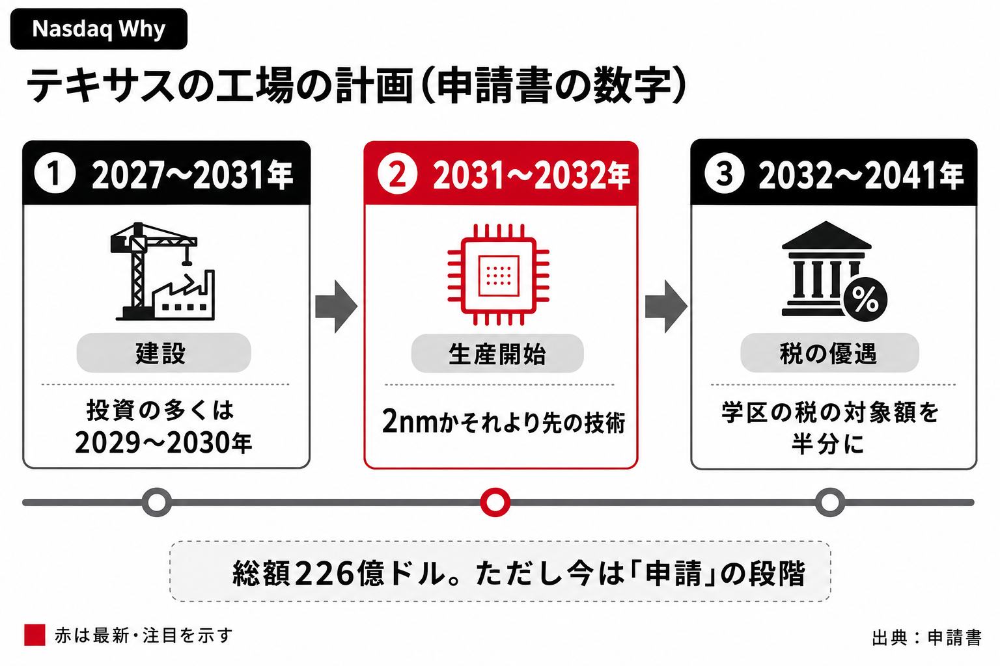
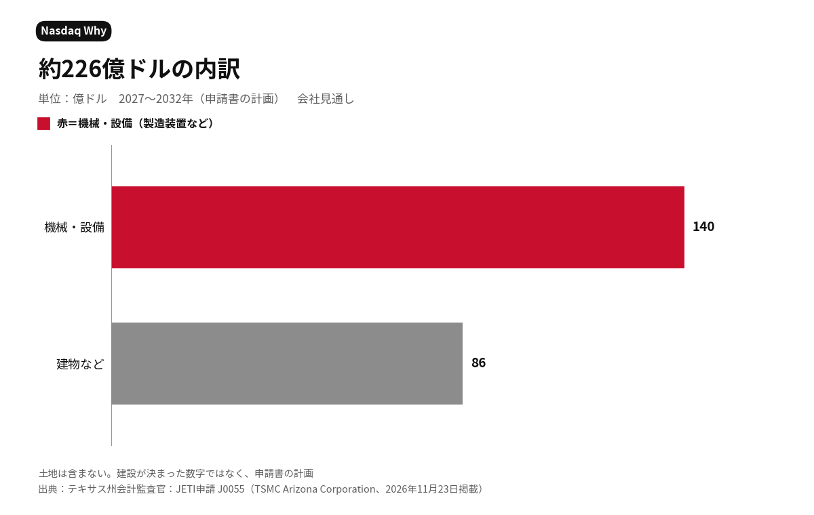
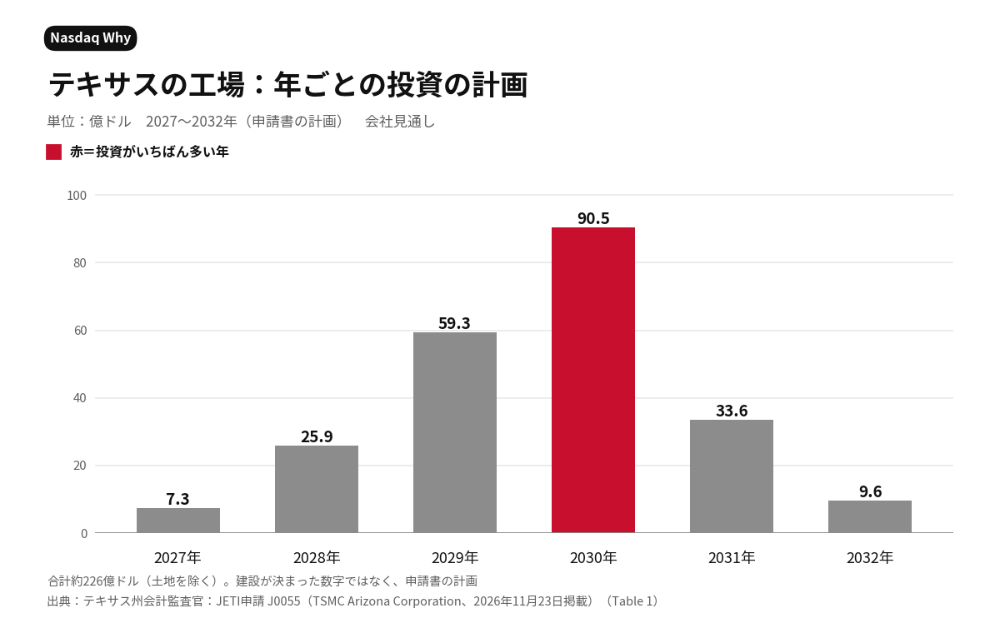

ニュースの深掘り
TSMC、226億ドルの米国新工場構想――なぜアリゾナに続きテキサスを検討するのか？
TSMCの米国子会社TSMC Arizona Corporationが、テキサス州ブラゾス郡（テキサスA&M大学のあるカレッジステーションの近く）に、総額約226億ドルの半導体工場を建てる場合の税の優遇を、州に申請しました。申請書は11月23日にテキサス州会計監査官のサイトに載りました。TSMCは「この地域への投資の可能性を引き続き検討している」としていて、建設はまだ決まっていません。申請書の数字から、何が分かり、何がまだ分からないのかを整理します。

何が出てきたのか：税の優遇の申請書
テキサス州には、大きな投資をする会社の、学区の税（学校の運営のための固定資産税）を軽くする制度「JETI」があります。TSMC Arizona Corporationは、この制度の申請書（番号J0055）を出し、11月23日に州の会計監査官のサイトに公開されました。計画の名前は「TSMC Texas Advanced Semiconductor Manufacturing Campus」です。
会計監査官は11月24日、この申請についての推薦の文書を出しました。一部の地元の報道は「承認」と書きましたが、これは最終の承認ではありません。今後、地元のカレッジステーション学区の公聴会（12月10日の予定）を経て、学区と州知事の両方が同意する必要があります。知事の判断の期限は12月24日と報じられています。
申請書の数字
| 項目 | 申請書の数字 |
|---|---|
| 総投資額 | 約226億ドル（土地を除く） |
| うち建物など | 約86億ドル |
| うち機械・設備 | 約140億ドル |
| 敷地 | 約3,232エーカー（約13平方km） |
| 新しい直接の雇用 | 2,099人 |
| 平均の年収（2027年の見込み） | 13万3,026ドル |
| 技術 | 2nmかそれより先 |
| 建設 | 2027〜2031年 |
| 税の優遇の見込み額 | 約3億5,400万ドル |

工場の数は「1つ以上」と書かれ、郡は1つの工場と説明しています。雇用は2028年に757人、2029年に1,110人、2030年に232人と増える計画です。
年収の13万3,026ドルは、申請書の中の見込みの数字です。制度が会社に約束させる最低の条件は「35人以上、年収7万3,603ドル以上」で、2,099人や13万ドルは約束の数字ではありません。
税の優遇は、2032〜2041年の10年間、学区の税の対象になる価値を半分にするものです。会計監査官は、学区の税で約3億5,400万ドルの軽減になると見積もりました。
投資は2029〜2030年に集中
申請書の年ごとの投資の計画を見ると、2027年は約7億ドルと少なく、2029年に約59億ドル、2030年に約91億ドルと大きく増えます。工場の建物を先に建て、そのあとに高価な製造装置を入れていく順番を反映しているとみられます（Nasdaq Whyの見方）。

生産で売上が出始めるのは2031年、本格的に動くのは2032年の計画です。なお、申請書の中でも建設の期間の書き方には食い違いがあり、細かい日程は変わる可能性があります。
なぜテキサスを検討するのか
申請書には、テキサスの候補地は「テキサス以外、特にアリゾナでの拡張の選択肢」と比べて検討されていて、税の優遇が「決め手となる、強い要因」だと書かれています。つまり、税の優遇はテキサスとアリゾナの誘致の競争の材料になっています。
TSMCの魏哲家（C.C. Wei）CEOは、10月15日の決算説明会で、テキサスの候補地を調べるためにチームを送ったと話していました（報道）。
| 項目 | アリゾナ（今の拠点） | テキサス（候補地） |
|---|---|---|
| 敷地 | 約2,000エーカー強 | 約3,232エーカー |
| 電力 | APSと長期の契約（規制当局の承認待ち） | 地元のBryan Texas Utilities |
| 水 | フェニックス市から1日約475万ガロン | 地元の水道組合など |
| 人材 | 今は約3,500人が働く | テキサスA&M大学の技術者 |
出典は地元テレビKBTXなどの報道で、電力の値段や送電網（ERCOT）の余裕など、細かい比較の数字は公表されていません。
今の米国の計画（2,650億ドル）に入るのか
TSMCの米国での投資の計画は、2025年3月に1,650億ドルと発表され、2026年7月16日に2,650億ドルに増えました。中身は、アリゾナの10の工場・2つの先端のパッケージの工場・研究開発の拠点で、すべてアリゾナです（アリゾナ州・TSMCの資料）。
テキサスの工場が、この2,650億ドルの中に入るのか、別の追加の投資なのかについて、TSMCの説明は見つかりませんでした。今の計画がすべてアリゾナなので追加の可能性がありますが、確認できていません。この記事では、226億ドルを2,650億ドルに足し算しません。
アリゾナの工場の今
- 第1工場：4nm。2024年10〜12月から量産
- 第2工場：3nm。2027年後半に量産の目標
- 第3工場：2nm・A16。2025年4月に着工、2030年までに量産
- 第4工場と最初の先端のパッケージの工場：2026年はじめに建設を始めた
- 2026年1月：フェニックス北部の約900エーカーの州の土地を落札（報道）
出典：TSMCのアリゾナのページ、報道。
日本の会社への影響は？
今回の申請書には、装置や材料の会社の名前は出てきません。投資の約6割（約140億ドル）は機械・設備なので、工場が実際に建てば、製造装置や材料の需要になります。ただし、どの会社にどれだけ注文が出るかは、今の資料からは分かりません。
アリゾナでは、富士フイルム（メサの材料の工場）や、多摩化学工業の子会社Moses Lake Industries、トーカロなど、日本の会社が拠点を設けています（各社の発表・報道）。ただし、これらの会社とTSMCの取引は資料で確認できていません。
次に見るもの
- 12月10日：カレッジステーション学区の公聴会
- 12月24日：州知事の判断の期限（報道）
- ブラゾス郡：郡の税の優遇の話し合い（公聴会・住民説明会の予定）
- TSMC：正式に建設を決めるか。2,650億ドルの計画に入るのか、追加か
- 2026年10〜12月期のTSMCの決算（2027年1月中旬の見込み）：設備投資の計画
▶ 関連記事：半導体特集 第3回「TSMC・サムスン・インテルの製造の競争」 https://nasdaqwhy.github.io/feature/semis-03/
本記事は公開情報にもとづく解説で、特定の銘柄の売買をすすめるものではありません。
情報の確認状況
確認した一次資料：テキサス州会計監査官のJETI申請書（J0055）と推薦の文書（推薦の文書は一部のみ確認）、アリゾナ州商務局・TSMCのアリゾナのページ。
報道ベース：12月10日・12月24日の日程、アリゾナとテキサスの比較の数字、CEOの発言、アリゾナの土地の落札。
未確認：TSMCが建設を決めたかどうか（決めていない）、2,650億ドルとの関係、ブラゾス郡の税の優遇の内容、「6つの工場」という一部の報道。
NasdaqWhyでは、ニュースの「なぜ？」を一次資料の数字で深掘りしていきます。
出典
- テキサス州会計監査官：JETI申請 J0055（TSMC Arizona Corporation、2026年11月23日掲載）
- JETI申請書（PDF）
- テキサス州会計監査官の推薦の文書（PDF、2026年11月24日）
- KBTX：TSMC tax break application heads to governor, school district（2026年11月24日）
- Reuters：TSMC unit seeks Texas property tax limit（2026年11月24日、The Star掲載）
- 経済日報：TSMCの説明（2026年11月24日）
- アリゾナ州商務局：TSMCの追加投資の発表（2026年7月）
- TSMC：アリゾナのページ